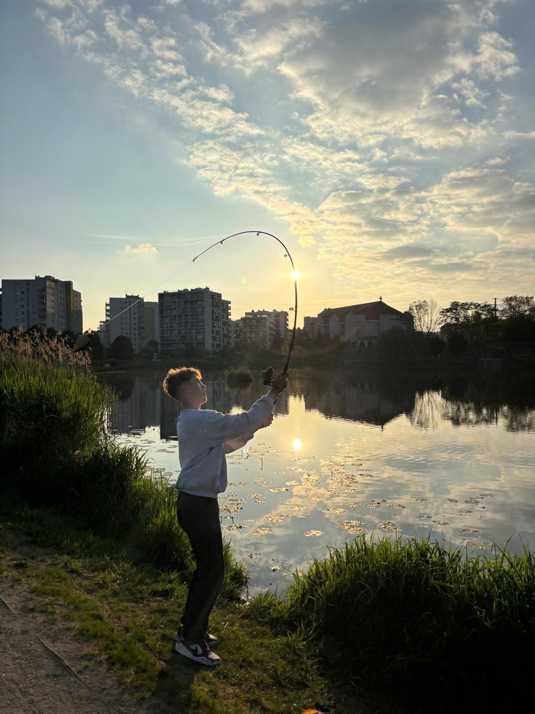
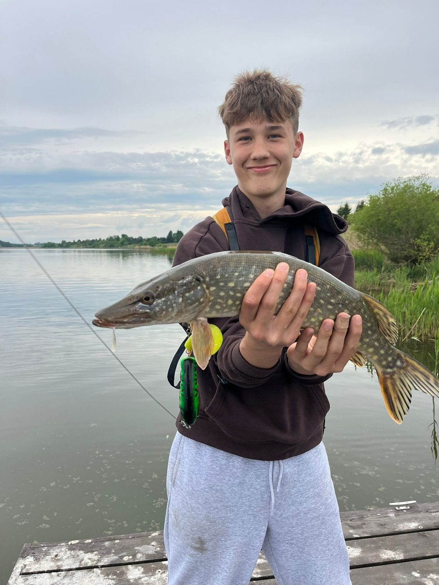
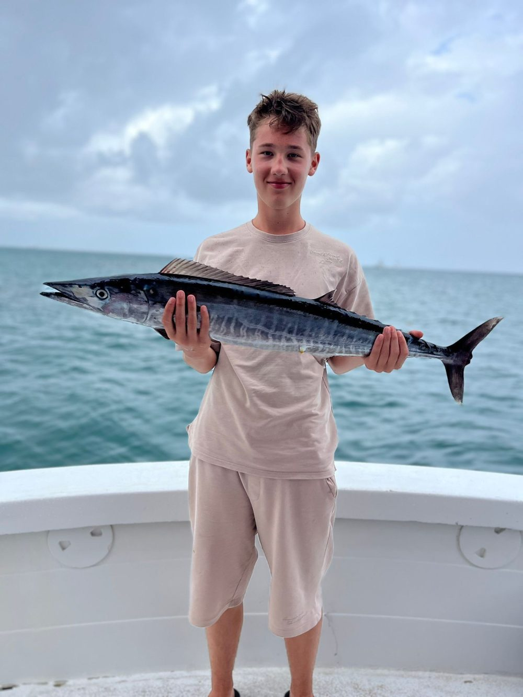
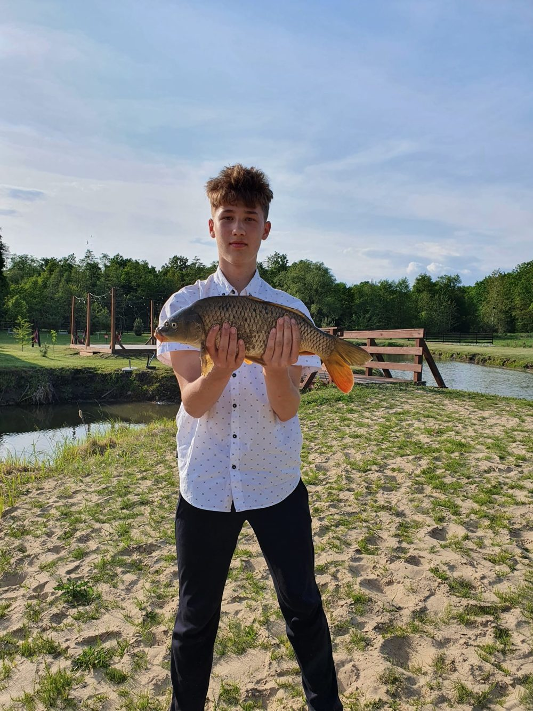
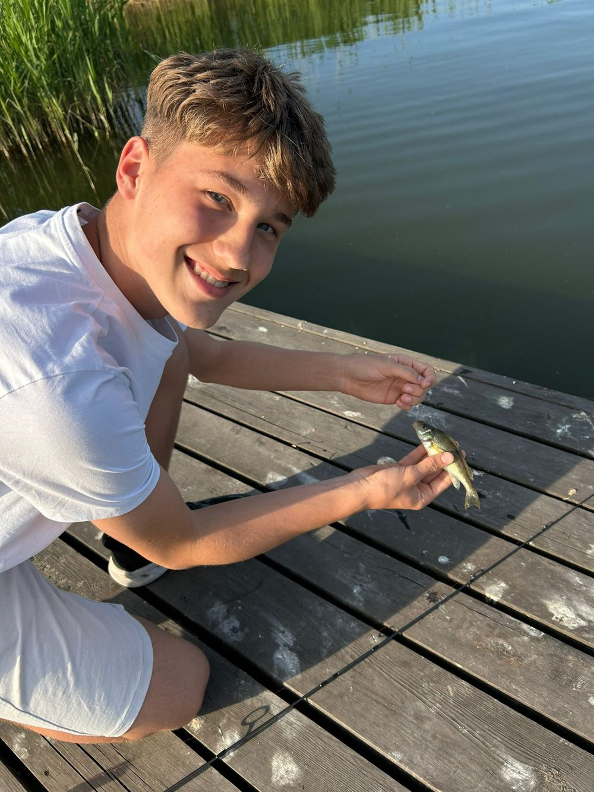
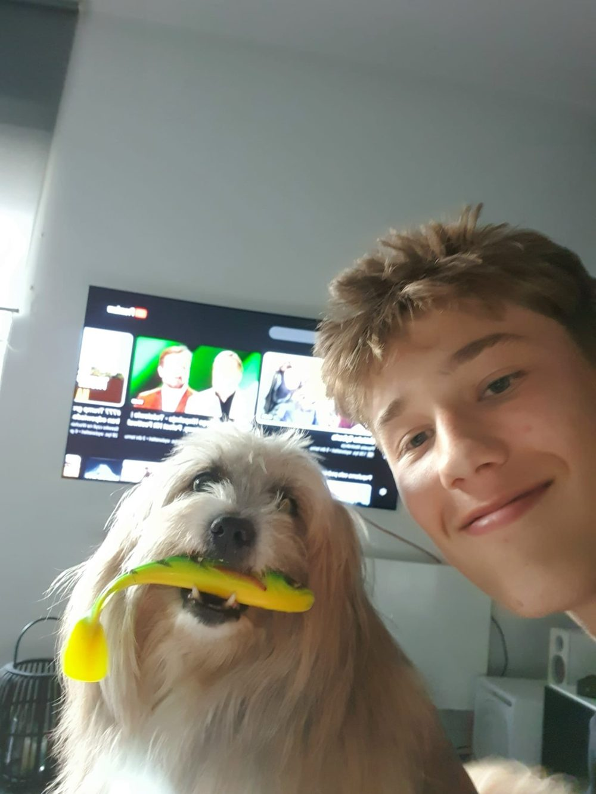

Wędkarstwo
Spinning, łódka, pomost – wszystko się liczy. Najbardziej kocham szczupaki.

Cześć, jestem
Mam 15 lat i jestem zapalonym wędkarzem. Najlepiej czuję się nad wodą – z wędką, kolegami i dobrym humorem.
Zobacz moje rybyNazywam się Tymon Łapa. Najbardziej lubię łowić szczupaki, ale nie pogardzę żadną rybą. Najlepiej spędzony czas wolny to dla mnie czas na rybach z kolegami.
Dobrze mówię po angielsku – od 5 lat mam korepetycje online z nauczycielką z RPA. Lubię też grać w piłkę nożną i siatkówkę, a w domu czeka na mnie pies Tiger.

Kilka zdjęć z ostatnich wypraw. Kliknij, żeby powiększyć.



Spinning, łódka, pomost – wszystko się liczy. Najbardziej kocham szczupaki.
Piłka nożna i siatkówka. Do tego rower i spacery po południu.
Od 5 lat uczę się online z nauczycielką z RPA. Geografia to mój drugi ulubiony temat.

To mój pies i najwierniejszy towarzysz w ogrodzie. Jak widać – też interesuje się gumami.
Podnosić poziom angielskiego, uczyć się hiszpańskiego i matematyki. Mieć więcej czasu na sport, rower, spacery i ryby.
Być szczęśliwym, zdrowym uczniem i poznać nowych kolegów i koleżanki.
Pójść na studia zaoczne i zacząć pracę, która łączy się z moim hobby i jest dla mnie przyjemna.